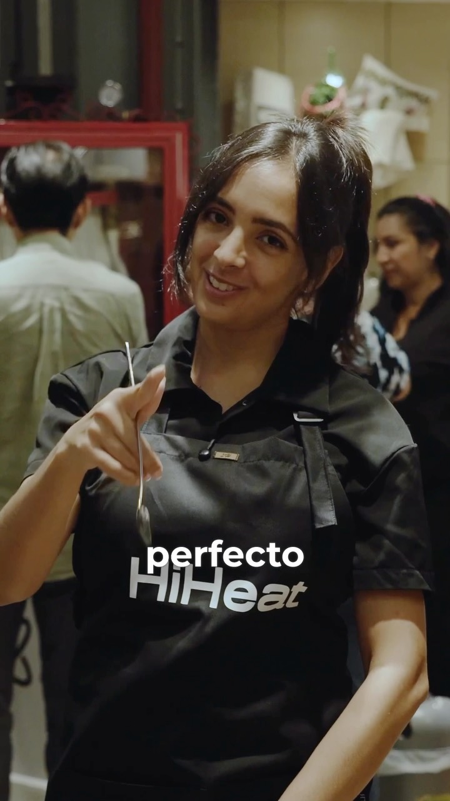
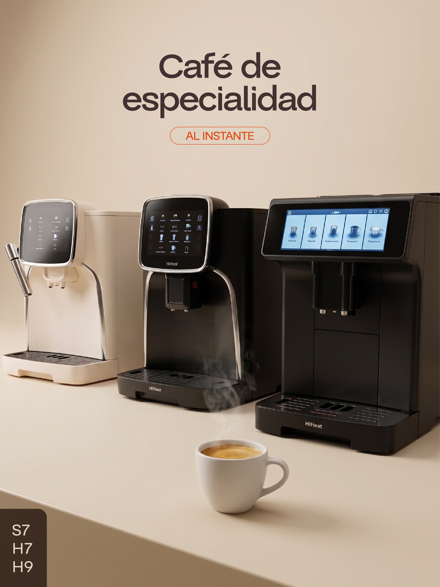
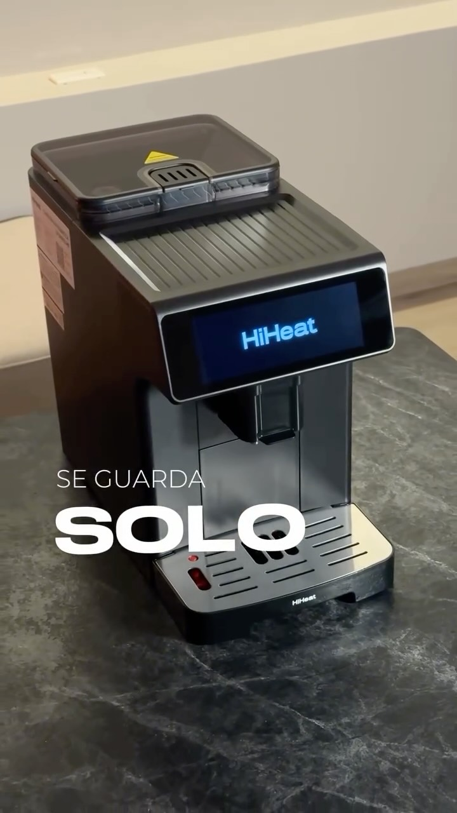
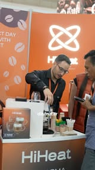
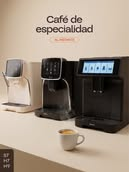
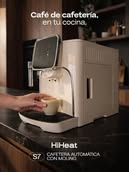
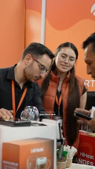
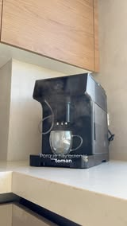

Informe de redes sociales
El contenido alcanzó su mejor conversión hasta ahora: 6,83% de engagement promedio (+2,43 pp), con los dos carruseles de decisión de compra en 10,27% y 9,49% — y la cuenta sumó +303 seguidores hasta cerrar en 1.931.
El alcance orgánico volvió a caer: 2.099 personas (−58%) y 3.093 vistas (−62%), con un promedio de solo 420 de alcance por pieza frente a 1.002 del periodo anterior.



- Los dos carruseles de decisión de compra son lo mejor del periodo: 10,27% (29 oct) y 9,49% (16 oct) de engagement. Entre los dos aportaron 50 de las 113 interacciones con apenas 1.080 vistas sumadas.
- El reel del espresso martini con iGlace (21 oct) fue el de mayor alcance — 857 personas, el 41% del alcance del periodo — repitiendo el patrón de los últimos meses: lo que nace de una activación con aliado es lo que más llega.
- La cuenta pasó de 1.631 a 1.931 seguidores, pero 235 de esos 303 entraron entre el 14 y el 20 de octubre, una semana en la que ninguna publicación superó las 761 vistas: ese salto no lo explica el contenido orgánico.





- La página sumó 979 impresiones con 6 piezas (−49%) y 185 personas alcanzadas: el canal sigue sin despegar.
- Aun así el engagement subió a 4,79% (+3,77 pp) y el carrusel comparativo del 16 de octubre consiguió 3 comentarios, los primeros en varios meses.
- Los seguidores crecieron +94 hasta 569 pese a la caída de alcance: igual que en Instagram, el crecimiento viene de la inversión y no de la distribución orgánica.
| Campaña | Objetivo | Inversión | Impresiones | Alcance | Clics | CPC | CTR | Resultados | Costo/Resultado |
|---|---|---|---|---|---|---|---|---|---|
| MENSAJES HIHEAT CAFETERAS | OUTCOME_ENGAGEMENT | $628,05 | 235.666 | 107.336 | 7334 | $0,09 | 3.11% | 1150 (Conversaciones de mensajería iniciadas) | $0,55 |
| HIHEAT_TRAFICOIG | OUTCOME_TRAFFIC | $38,06 | 26.564 | 19.115 | 1154 | $0,03 | 4.34% | 613 (Visitas al perfil) | $0,06 |
- Campaña de cafeteras: $628,05 para 1.150 conversaciones iniciadas, a $0,55 cada una. Sigue siendo el motor comercial, pero el costo por conversación subió desde los $0,41 del corte anterior.
- Campaña de tráfico: $38,06 para 613 visitas al perfil a $0,06 cada una, con un CTR de 4,34% — la más eficiente de las dos.
- En total, $666,11 de inversión, 262.230 impresiones, 126.451 personas alcanzadas y 8.488 clics (CTR 3,24%).
- La cuenta publicitaria se comparte con iGlace: aquí se contabilizan únicamente las campañas de HiHeat. Quedan fuera la campaña de iGlace HORECA ($158,14) y la campaña mixta entre ambas marcas ($431,05).
Abrir el mes con prueba social pura: una clienta real contando, con su propia voz, que la S7 le va excelente, que ya domina varias recetas y que además le llegó con un juego de tazas de regalo.
Es el tipo de contenido que esta cuenta lleva tres meses premiando: la pieza con una persona real usando el producto lideró interacciones en agosto (7,58%) y en septiembre (7,09%), y los dos carruseles de decisión de compra de octubre marcaron 10,27% y 9,49%. El testimonio junta las dos cosas —persona real + argumento de compra— y además responde la objeción silenciosa de un equipo que volvió al catálogo hace dos meses: ¿de verdad funciona? Añade un segundo beneficio: prepara el terreno para la promo del 27, porque menciona las tazas antes de que sean una oferta.
Reel de 25-30 s construido sobre el audio original de la clienta, sin locución de marca. Abre con la nota de voz sonando sobre el plano de la máquina encendida y el rótulo «Esto nos llegó de una clienta» (que es el gancho: nadie se salta un audio ajeno). Mientras habla, van las imágenes: la S7 en su cocina real, el espresso saliendo, dos o tres de las recetas que ella menciona, y las tazas desempacadas. Subtítulos obligatorios, porque el audio es el contenido. Cierre con el CTA que ya funcionó en septiembre: «Comenta QUIERO LA S7 y te escribimos». Si la clienta autoriza, mostrar su nombre de pila y ciudad — eso es lo que separa un testimonio de un montaje.
Llevar a video el comparativo entre S7, H7 y H9: qué hace distinta a cada una y para quién es cada una, cerrando con la pregunta directa de cuál elegiría el espectador.
El carrusel con este mismo tema (16 oct) fue la segunda mejor pieza del periodo: 9,49% de engagement, 35 interacciones y 6 comentarios — la que más conversación generó. Pasarlo a reel ataca justo la debilidad del mes: el carrusel convierte pero no circula (369 de alcance), mientras los reels son los que llegan lejos. Además la campaña de mensajes está pagando $0,55 por conversación, 34% más que el corte anterior: necesita creatividad nueva, y esta es la pieza que ya demostró que resuelve la duda de compra.
Reel de 30 s en tres bloques de ocho segundos, una máquina por bloque, siempre con el mismo encuadre para que la comparación se lea sola: S7 (compacta, molino integrado, varilla manual — para quien disfruta el ritual), H7 (espumado automático, 10 bebidas — para la rutina diaria), H9 (pantalla de 7", 19 bebidas, dos tazas a la vez — para quien recibe visitas). Un rótulo fijo por máquina con el perfil de usuario, no con la ficha técnica. Cierre a tres cuadros con la pregunta «¿Cuál va contigo?» y CTA de comentar la letra. Subir esta pieza como creatividad de la campaña de mensajes la misma semana.
Mostrar que la H9 no es una máquina de un solo café: tres recetas concretas, con sus pasos, para que la pieza se guarde y se vuelva a abrir en la cocina.
Los guardados llevan dos cortes planos (23 este periodo, 22 el anterior) y es la métrica que mide si el contenido sirve para algo después de verlo. El formato receta es el que los recupera. Por otro lado, la H9 se ha comunicado siempre desde la ficha —19 bebidas, la pantalla— y su último reel (4 nov) se quedó en 261 vistas: el equipo más caro del catálogo es el que menos se ha mostrado en uso. Tres recetas resuelven eso y dan argumento para justificar el precio frente a la H7.
Carrusel de 8 láminas: portada «3 recetas que puedes hacer hoy con la H9»; luego tres bloques de dos láminas por receta — una con la foto del resultado y el nombre, otra con los pasos numerados y el ajuste exacto de la máquina (volumen en ml, temperatura, qué botón). Sugerencia de recetas por temporada: un latte especiado para noviembre, un affogato para las reuniones y un americano doble para la mañana. Lámina final: «Guarda este post para tu próxima visita» + dónde comprarla. El texto de cada paso tiene que poder leerse sin sonido y sin contexto: la pieza va a reabrirse semanas después.
Lanzar la producción con Jovi Acosta como la pieza de temporada: «llegan los meses más movidos en eventos y reuniones, y esta vez quise hacer algo distinto» — una tarde con sus mejores amigas que empieza con pizza, sigue con cócteles y termina con café, con los equipos de HiHeat e iGlace (IG18 y el mini bar retro) integrados con naturalidad.
Es la producción que lleva desde septiembre planificada como banco de contenido para el cierre de año, y noviembre es su momento exacto: la temporada de reuniones empieza. Los datos respaldan la apuesta: el contenido de activación con aliado es lo único que abre audiencia nueva en esta cuenta — el reel del espresso martini con iGlace se llevó el 41% del alcance de todo el periodo (857 personas), el del Día del Socio el 44% del suyo y el del canje de agosto 3.423. Con 1.931 seguidores y 68% de audiencia masculina de 35 a 44 años, el ángulo de anfitrión —recibir bien en casa— es el que conecta con quien ya tiene la cocina montada.
Reel de 40-50 s narrado por Jovi en primera persona, como idea suya y no como anuncio: arranca con ella contando el plan («llegan los meses más movidos…»), sigue con la llegada de las amigas, la pizza saliendo del horno, los cócteles con hielo de la IG18 y el mini bar retro, y cierra con el café de sobremesa, que es el momento HiHeat. Regla de producción: ningún equipo se presenta, todos aparecen trabajando. Grabar en vertical pensando en que de este mismo rodaje salen al menos cuatro piezas más (el carrusel del 25, clips por producto y material de eventos para diciembre). Publicar en colaboración con el perfil de Jovi y con iGlace para sumar sus audiencias.
Cerrar la narrativa del evento desde el ángulo de producto: cada invitada pidió algo distinto y la misma máquina lo resolvió — espresso, capuchino, latte, americano — sin que nadie tuviera que ser barista.
Es el derivado natural del rodaje del 21 y cumple dos funciones a la vez: mantiene viva la historia una semana más sin producción nueva, y traduce la fiesta en un argumento de compra. El patrón de la cuenta es claro: los carruseles con gente real usando el producto son los que más interacción generan (10,27% y 9,49% en octubre, 7,09% en septiembre), mientras que los reels de evento son los que más alcance traen. Publicar los dos del mismo rodaje cubre las dos métricas con un solo día de grabación.
Carrusel de 6-7 láminas, todo fotografía real del evento: portada con el grupo y la bandeja de cafés servidos; una lámina por amiga con su taza y el nombre de la preparación en grande («Para Ana, un capuchino»); una lámina con la máquina en el centro de la mesa y el texto que sostiene la idea —una sola máquina, cuatro pedidos distintos—; cierre con la invitación a recibir así en casa esta temporada y el CTA de cotizar. Mantener la estética de la tarde (luz cálida, mesa puesta), no la de catálogo.
Convertir en oferta con fecha lo que el mes entero estuvo construyendo: la S7 con un juego de tazas de regalo, comunicado el día de mayor intención de compra del año.
Es la única pieza del mes con fecha límite, y esa es precisamente la palanca que esta cuenta tiene medida: el reel del canje con Sukasa de agosto —el único con cierre de promoción— se llevó 21 de los 34 compartidos del mes, mientras el reel del Día del Socio, mismo aliado pero sin fecha, se quedó en 5. En este periodo los compartidos bajaron a 16 y ninguna pieza llevaba oferta. Además cierra el círculo del mes: la clienta del día 7 ya contó que sus tazas llegaron de regalo, así que el 27 la promesa no suena a invento publicitario sino a algo que ya pasó.
Carrusel corto y directo, 4-5 láminas: portada con la S7 y las tazas en el mismo plano y la fecha visible desde el primer segundo («Solo hoy» o la vigencia real); una lámina con lo que incluye; una con el testimonio de la clienta del 7 de noviembre recuperado como captura o cita; una con dónde comprarla; cierre con una lámina pensada para reenviar — «Mándaselo a quien lleva meses diciendo que va a comprar una cafetera». Si hay inventario limitado, decirlo: es lo que convierte el interés en acción el mismo día.
- Arrancar con prueba social y cerrar con oferta: el testimonio del 7 instala la credibilidad y la promo del 27 la cobra.
- Una sola producción, tres piezas: del rodaje con Jovi salen el reel del 21, el carrusel del 25 y material de eventos para diciembre.
- Recuperar alcance con aliados: es lo único que ha abierto audiencia nueva — 857 personas en una sola pieza este periodo, el 41% del total.
- Alimentar la campaña de mensajes con creatividades nuevas: el costo por conversación subió a $0,55 y el comparativo de máquinas ya demostró que resuelve la duda de compra.
- Recuperar los guardados: llevan dos cortes planos en 22-23; el carrusel de recetas es el formato que los mueve.
- Volver a tener una pieza con fecha: en todo el periodo no hubo ninguna, y los compartidos cayeron a 16.
Una sola tarde: pizza en el horno, cócteles con hielo de la IG18 y el mini bar retro de iGlace, y el café de sobremesa con la máquina HiHeat. Jovi narra el plan como idea suya, no como anuncio.
El reel del 21, el carrusel del 25, clips sueltos por producto y fotografía de evento para diciembre. Planificar el plan de tomas pensando en los cuatro usos desde el primer momento, no recortando después.
La producción estaba prevista desde septiembre como banco de contenido para el cierre de año y noviembre es su ventana natural: arranca la temporada de reuniones, que es exactamente el argumento del guion. Publicar en colaboración con el perfil de Jovi y con iGlace para sumar las tres audiencias en una misma pieza.
- Cuatro de las seis piezas hablan de cafeteras y tres de ellas empujan directo a la conversación comercial: es el relato que sostiene la campaña de mensajes, que este periodo generó 1.150 conversaciones.
- El reel con Jovi es la apuesta de alcance del mes. El contenido de estudio promedió 420 personas por pieza; las piezas con aliado llevan tres meses seguidos siendo lo más lejos que llega la marca (857, 1.735 y 3.423 de alcance).
- El comparativo de máquinas pasa de carrusel a reel porque el formato era el límite, no el tema: 9,49% de engagement con solo 369 de alcance. En reel, el mismo argumento debería llegar al doble de gente.
- La promo del 27 recupera la palanca que falta. Con fecha límite, agosto hizo 21 compartidos en una sola pieza; sin ella, el mejor mes posterior se quedó en 5. Este periodo cerró en 16 compartidos entre cinco publicaciones.
- Para Facebook, solo los tres reels. En el periodo medido los reels promediaron 148 impresiones y los carruseles 193 — pero el carrusel del 29 de octubre se quedó en 69 sin una sola reacción, y el reel del 13 llegó a 328.
Elaborado por Pro Motion Sport Marketing · @pro_motion.ec · Noviembre 2026